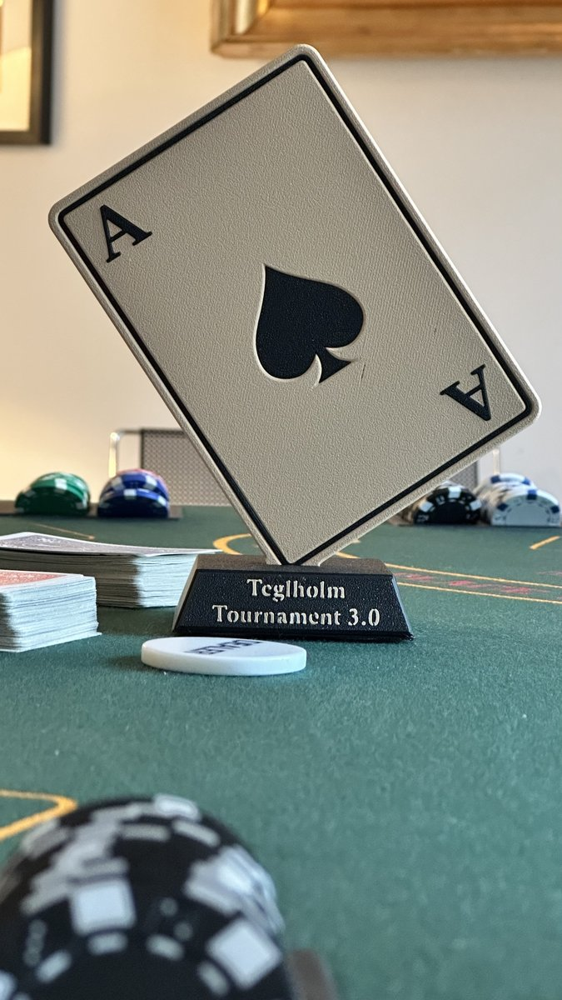
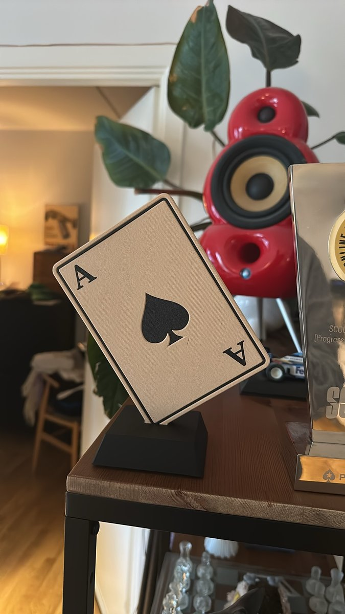

A trophy for the winner who takes all. Trophy pairs matte black plastic with warm beige finish.
Form
The trophy takes form of the ace of spades, sitting in a square foot. The letters and spade symbol are engraved in the card, creating a depth in the light reflection.
Craft
The trophy was printed in seven parts, and assembled with tight tolerances. The foot is filled with sand, ensuring a certain weight and durability of the trophy.
Result

